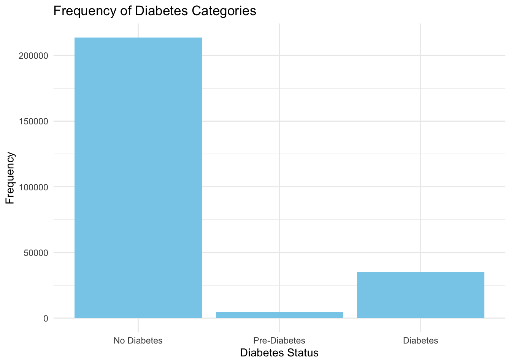

Data cleaning and EDA
- Data Description:
The dataset was collected by the Behavioral Risk Factor Surveillance System (BRFSS) in 2015. This original dataset contains responses from 441,455 individuals and has 330 features. For this project, we use the one with 253,680 responses and a three-class diabetes target variable indicating no diabetes, prediabetes, or diabetes. The potential factors for diabetes are biological factors such as sex, blood pressure, cholesterol, BMI, heart disease, social factors such as education and income, and habits of smoking, physical exercise, eating fruit etc..
Diabetes_012: 0 is for no diabetes or only during pregnancy, 1 is for prediabetes, and 2 is for diabetes.High BP: 0 = no high BP 1 = high BPHighChol: 0 = no high cholesterol 1 = high cholesterolCholcheck: 0 = no cholesterol check in 5 years 1 = yes cholesterol check in 5 yearsBMI: Body Mass IndexSmoker: Have you smoked at least 100 cigarettes in your entire life? [Note: 5 packs = 100 cigarettes] 0 = no 1 = yesStroke: (Ever told) you had a stroke. 0 = no 1 = yesHeartDiseaseorAttack: coronary heart disease (CHD) or myocardial infarction (MI) 0 = no 1 = yesPhysActivity: physical activity in past 30 days - not including job 0 = no 1 = yesFruits: Consume Fruit 1 or more times per day 0 = no 1 = yes
Read in Data
diabetes_raw <- read_csv("data/Diabetes_012_data.csv") |>
# factor Diabetes to 0, 1, 2
mutate(Diabetes_012 = factor(Diabetes_012, levels = c(0, 1, 2)),
HighBP = factor(HighBP, levels = c(0, 1), labels = c("No", "Yes"))) ## Rows: 253680 Columns: 22
## ── Column specification ────────────────────────────────────────────────────────
## Delimiter: ","
## dbl (22): Diabetes_012, HighBP, HighChol, CholCheck, BMI, Smoker, Stroke, He...
##
## ℹ Use `spec()` to retrieve the full column specification for this data.
## ℹ Specify the column types or set `show_col_types = FALSE` to quiet this message.head(diabetes_raw)## # A tibble: 6 × 22
## Diabetes_012 HighBP HighChol CholCheck BMI Smoker Stroke
## <fct> <fct> <dbl> <dbl> <dbl> <dbl> <dbl>
## 1 0 Yes 1 1 40 1 0
## 2 0 No 0 0 25 1 0
## 3 0 Yes 1 1 28 0 0
## 4 0 Yes 0 1 27 0 0
## 5 0 Yes 1 1 24 0 0
## 6 0 Yes 1 1 25 1 0
## # ℹ 15 more variables: HeartDiseaseorAttack <dbl>, PhysActivity <dbl>,
## # Fruits <dbl>, Veggies <dbl>, HvyAlcoholConsump <dbl>, AnyHealthcare <dbl>,
## # NoDocbcCost <dbl>, GenHlth <dbl>, MentHlth <dbl>, PhysHlth <dbl>,
## # DiffWalk <dbl>, Sex <dbl>, Age <dbl>, Education <dbl>, Income <dbl>Exploratory Data Analysis
Univariate Analysis
Diabetes Type
diabetes_raw$Diabetes_012 <- factor(diabetes_raw$Diabetes_012, levels = c(0, 1, 2),
labels = c("No Diabetes", "Pre-Diabetes", "Diabetes"))
# Use ggplot2 to plot the frequency chart
ggplot(data = diabetes_raw) +
geom_bar(mapping = aes(x = Diabetes_012), fill = "skyblue") +
labs(x = "Diabetes Status", y = "Frequency", title = "Frequency of Diabetes Categories") +
theme_minimal()
High Blood Pressure
ggplot(data = diabetes_raw) +
geom_bar(mapping = aes(x = HighBP), fill = "lightgreen") +
labs(x = "High Blood Pressure", y = "Frequency", title = "Frequency of High Blood Pressure") +
theme_minimal()
bmi categorization
# write a function to categorize bmi values to diverse weight status
categorize_bmi <- function(bmi) {
if (bmi < 18.5) {
return("Underweight")
} else if (bmi >= 18.5 & bmi < 25) {
return("Normal weight")
} else if (bmi >= 25 & bmi < 30) {
return("Overweight")
} else {
return("Obesity")
}
}
# add a column named weight_status to the data set
diabetes_raw$weight_status <- sapply(diabetes_raw$BMI, categorize_bmi)Plot: Association between Diabetes Status and blood pressure status
ggplot(diabetes_raw, aes(x = Diabetes_012, fill = HighBP)) +
geom_bar(position = "fill") +
ylab("Blood Pressure Status") +
xlab("Diabetes Status") +
ggtitle("Association between Diabetes Status and Blood Pressure Status") +
scale_fill_brewer(palette = "Pastel1") +
theme_minimal()
Plot: Association between Diabetes Status and Weight Status
ggplot(diabetes_raw, aes(x = Diabetes_012, fill = weight_status)) +
geom_bar(position = "fill") +
ylab("Proportion") +
xlab("Diabetes Status") +
ggtitle("Association between Diabetes Status and Weight Status") +
scale_fill_brewer(palette = "Pastel1") +
theme_minimal()
Plot: Box plot distribution of BMI in different Diabetes status
plotBMI = ggplot(diabetes_raw, aes(x = BMI, y = Diabetes_012, fill = Diabetes_012))+
geom_boxplot(alpha = 0.5) +
theme(legend.position = 'none') +
scale_fill_brewer(palette = 'Pastel1') +
ylab("Diabetes Status") +
xlab("BMI Distribution") +
ggtitle("Box Plot Distribution of BMI over Diabetes Status") +
theme_minimal()
plotBMI
Plot: Smoking Status over Diabetes Status
plot_smoke =
ggplot(diabetes_raw, aes(Smoker, ..count..)) +
geom_bar(aes(fill = Diabetes_012), position = "dodge") +
scale_fill_brewer(palette = 'Pastel1') +
ylab("Frequencies") +
xlab("Smoking Status") +
ggtitle("Smoking Status Frequencies over Diabetes Status") +
theme_minimal()
plot_smoke## Warning: The dot-dot notation (`..count..`) was deprecated in ggplot2 3.4.0.
## ℹ Please use `after_stat(count)` instead.
## This warning is displayed once every 8 hours.
## Call `lifecycle::last_lifecycle_warnings()` to see where this warning was
## generated. ### Plot: Fruits or Veggies over different Diabetes Status
### Plot: Fruits or Veggies over different Diabetes Status
mosaicplot(Fruits~Veggies,data=diabetes_raw,col=c("Light Pink","Light Blue"))
Plot: Distribution of Education Level over different Diabetes Status
plot_education =
ggplot(diabetes_raw, aes(x = Education, ..count..)) +
geom_bar(aes(fill = Diabetes_012), position = 'dodge') +
scale_fill_brewer(palette = 'Pastel1') +
ylab("Frequencies") +
xlab("Education Level") +
ggtitle("Education Level Frequencies over Diabetes Status") +
theme_minimal()
plot_education
Plot: Distribution of Income Level over different Diabetes Status
plot_income =
ggplot(diabetes_raw, aes(Income, ..count..)) +
geom_bar(aes(fill = Diabetes_012), position = "dodge") +
scale_fill_brewer(palette = 'Pastel1') +
ylab("Frequencies") +
xlab("Income Level") +
ggtitle("Income Level Frequencies over Diabetes Status") +
theme_minimal()
plot_income
Statistical Test 1.1 P-value function
pvalue <- function(x, ...) {
# Construct vectors of data y, and groups (strata) g
y <- unlist(x)
g <- factor(rep(1:length(x), times=sapply(x, length)))
if (is.numeric(y)) {
# For numeric variables, perform a one-side anova test
p <- aov(y ~ g)$p.value
} else {
# For categorical variables, perform a chi-squared test of independence
p <- chisq.test(table(y, g))$p.value
}
# Format the p-value, using an HTML entity for the less-than sign.
# The initial empty string places the output on the line below the variable label.
c("", sub("<", "<", format.pval(p, digits=3, eps=0.001)))
}Create R table 1
## Rtable_1 shows the demographics stats
Rtable_1 =
table1(~ factor(Sex) + Age| Diabetes_012, data=diabetes_raw, overall=F, extra.col=list(`P-value`=pvalue))
Rtable_1| No Diabetes (N=213703) |
Pre-Diabetes (N=4631) |
Diabetes (N=35346) |
P-value | |
|---|---|---|---|---|
| factor(Sex) | ||||
| 0 | 120959 (56.6%) | 2604 (56.2%) | 18411 (52.1%) | <0.001 |
| 1 | 92744 (43.4%) | 2027 (43.8%) | 16935 (47.9%) | |
| Age | ||||
| Mean (SD) | 7.79 (3.10) | 9.08 (2.63) | 9.38 (2.33) | |
| Median [Min, Max] | 8.00 [1.00, 13.0] | 9.00 [1.00, 13.0] | 10.0 [1.00, 13.0] |
## Rtable_2 shows the physiology status factor stats
Rtable_2 =
table1(~ factor(HighBP) + factor(HighChol) + BMI + factor(weight_status) | Diabetes_012, data=diabetes_raw, overall=F, extra.col=list(`P-value`=pvalue))
Rtable_2| No Diabetes (N=213703) |
Pre-Diabetes (N=4631) |
Diabetes (N=35346) |
P-value | |
|---|---|---|---|---|
| factor(HighBP) | ||||
| No | 134391 (62.9%) | 1718 (37.1%) | 8742 (24.7%) | <0.001 |
| Yes | 79312 (37.1%) | 2913 (62.9%) | 26604 (75.3%) | |
| factor(HighChol) | ||||
| 0 | 132673 (62.1%) | 1756 (37.9%) | 11660 (33.0%) | <0.001 |
| 1 | 81030 (37.9%) | 2875 (62.1%) | 23686 (67.0%) | |
| BMI | ||||
| Mean (SD) | 27.7 (6.26) | 30.7 (6.96) | 31.9 (7.36) | |
| Median [Min, Max] | 27.0 [12.0, 98.0] | 30.0 [13.0, 96.0] | 31.0 [13.0, 98.0] | |
| factor(weight_status) | ||||
| Normal weight | 64336 (30.1%) | 689 (14.9%) | 3928 (11.1%) | <0.001 |
| Obesity | 64906 (30.4%) | 2388 (51.6%) | 20557 (58.2%) | |
| Overweight | 81531 (38.2%) | 1526 (33.0%) | 10692 (30.2%) | |
| Underweight | 2930 (1.4%) | 28 (0.6%) | 169 (0.5%) |
## Rtable_3 shows the social-economic factor stats
Rtable_3 =
table1(~ factor(Education) + factor(Income) | Diabetes_012, data=diabetes_raw, overall=F, extra.col=list(`P-value`=pvalue))## Warning in chisq.test(table(y, g)): Chi-squared approximation may be incorrectRtable_3| No Diabetes (N=213703) |
Pre-Diabetes (N=4631) |
Diabetes (N=35346) |
P-value | |
|---|---|---|---|---|
| factor(Education) | ||||
| 1 | 125 (0.1%) | 2 (0.0%) | 47 (0.1%) | <0.001 |
| 2 | 2699 (1.3%) | 161 (3.5%) | 1183 (3.3%) | |
| 3 | 6868 (3.2%) | 314 (6.8%) | 2296 (6.5%) | |
| 4 | 50334 (23.6%) | 1350 (29.2%) | 11066 (31.3%) | |
| 5 | 58223 (27.2%) | 1333 (28.8%) | 10354 (29.3%) | |
| 6 | 95454 (44.7%) | 1471 (31.8%) | 10400 (29.4%) | |
| factor(Income) | ||||
| 1 | 7114 (3.3%) | 314 (6.8%) | 2383 (6.7%) | <0.001 |
| 2 | 8341 (3.9%) | 356 (7.7%) | 3086 (8.7%) | |
| 3 | 12005 (5.6%) | 421 (9.1%) | 3568 (10.1%) | |
| 4 | 15622 (7.3%) | 459 (9.9%) | 4054 (11.5%) | |
| 5 | 20792 (9.7%) | 587 (12.7%) | 4504 (12.7%) | |
| 6 | 30431 (14.2%) | 748 (16.2%) | 5291 (15.0%) | |
| 7 | 37219 (17.4%) | 735 (15.9%) | 5265 (14.9%) | |
| 8 | 82179 (38.5%) | 1011 (21.8%) | 7195 (20.4%) |
## Rtable_4 shows the physical-habits factor stats
Rtable_4 =
table1(~ factor(Smoker) + factor(PhysActivity) + factor(Fruits) + factor(Veggies) + factor(HvyAlcoholConsump) + factor(AnyHealthcare) | Diabetes_012, data=diabetes_raw, overall=F, extra.col=list(`P-value`=pvalue))
Rtable_4| No Diabetes (N=213703) |
Pre-Diabetes (N=4631) |
Diabetes (N=35346) |
P-value | |
|---|---|---|---|---|
| factor(Smoker) | ||||
| 0 | 121879 (57.0%) | 2349 (50.7%) | 17029 (48.2%) | <0.001 |
| 1 | 91824 (43.0%) | 2282 (49.3%) | 18317 (51.8%) | |
| factor(PhysActivity) | ||||
| 0 | 47212 (22.1%) | 1489 (32.2%) | 13059 (36.9%) | <0.001 |
| 1 | 166491 (77.9%) | 3142 (67.8%) | 22287 (63.1%) | |
| factor(Fruits) | ||||
| 0 | 76287 (35.7%) | 1842 (39.8%) | 14653 (41.5%) | <0.001 |
| 1 | 137416 (64.3%) | 2789 (60.2%) | 20693 (58.5%) | |
| factor(Veggies) | ||||
| 0 | 38159 (17.9%) | 1070 (23.1%) | 8610 (24.4%) | <0.001 |
| 1 | 175544 (82.1%) | 3561 (76.9%) | 26736 (75.6%) | |
| factor(HvyAlcoholConsump) | ||||
| 0 | 200487 (93.8%) | 4423 (95.5%) | 34514 (97.6%) | <0.001 |
| 1 | 13216 (6.2%) | 208 (4.5%) | 832 (2.4%) | |
| factor(AnyHealthcare) | ||||
| 0 | 10741 (5.0%) | 254 (5.5%) | 1422 (4.0%) | <0.001 |
| 1 | 202962 (95.0%) | 4377 (94.5%) | 33924 (96.0%) |
## Rtable_5 shows the symptoms/disease related stats
Rtable_5 =
table1(~ factor(Stroke) + factor(HeartDiseaseorAttack) + factor(DiffWalk) | Diabetes_012, data=diabetes_raw, overall=F, extra.col=list(`P-value`=pvalue))
Rtable_5| No Diabetes (N=213703) |
Pre-Diabetes (N=4631) |
Diabetes (N=35346) |
P-value | |
|---|---|---|---|---|
| factor(Stroke) | ||||
| 0 | 206944 (96.8%) | 4366 (94.3%) | 32078 (90.8%) | <0.001 |
| 1 | 6759 (3.2%) | 265 (5.7%) | 3268 (9.2%) | |
| factor(HeartDiseaseorAttack) | ||||
| 0 | 198352 (92.8%) | 3967 (85.7%) | 27468 (77.7%) | <0.001 |
| 1 | 15351 (7.2%) | 664 (14.3%) | 7878 (22.3%) | |
| factor(DiffWalk) | ||||
| 0 | 185434 (86.8%) | 3346 (72.3%) | 22225 (62.9%) | <0.001 |
| 1 | 28269 (13.2%) | 1285 (27.7%) | 13121 (37.1%) |
Data Random sampling each 500 from both diabetes and nondiabetes population. Join them together.
set.seed(123)
diabetes=
diabetes_raw |>
filter(Diabetes_012 == 'Diabetes')
diabetes_sample =
sample_n(diabetes, size = 500, replace = FALSE)
diabetes_sample## # A tibble: 500 × 23
## Diabetes_012 HighBP HighChol CholCheck BMI Smoker Stroke
## <fct> <fct> <dbl> <dbl> <dbl> <dbl> <dbl>
## 1 Diabetes Yes 1 1 32 1 0
## 2 Diabetes Yes 1 1 30 0 0
## 3 Diabetes Yes 1 1 33 1 0
## 4 Diabetes Yes 1 1 38 1 0
## 5 Diabetes Yes 1 1 21 0 0
## 6 Diabetes Yes 0 1 32 1 0
## 7 Diabetes Yes 1 1 34 1 0
## 8 Diabetes Yes 0 1 30 1 0
## 9 Diabetes Yes 1 1 21 1 0
## 10 Diabetes Yes 1 1 27 0 0
## # ℹ 490 more rows
## # ℹ 16 more variables: HeartDiseaseorAttack <dbl>, PhysActivity <dbl>,
## # Fruits <dbl>, Veggies <dbl>, HvyAlcoholConsump <dbl>, AnyHealthcare <dbl>,
## # NoDocbcCost <dbl>, GenHlth <dbl>, MentHlth <dbl>, PhysHlth <dbl>,
## # DiffWalk <dbl>, Sex <dbl>, Age <dbl>, Education <dbl>, Income <dbl>,
## # weight_status <chr>nondiabetes=
diabetes_raw |>
filter(Diabetes_012 == 'No Diabetes')
nondiabetes_sample =
sample_n(nondiabetes, size = 500, replace = FALSE)
nondiabetes_sample## # A tibble: 500 × 23
## Diabetes_012 HighBP HighChol CholCheck BMI Smoker Stroke
## <fct> <fct> <dbl> <dbl> <dbl> <dbl> <dbl>
## 1 No Diabetes No 0 1 30 1 0
## 2 No Diabetes Yes 1 1 28 1 0
## 3 No Diabetes No 1 1 26 1 0
## 4 No Diabetes No 0 1 24 1 0
## 5 No Diabetes No 0 1 26 0 0
## 6 No Diabetes Yes 0 1 26 0 0
## 7 No Diabetes No 1 1 20 0 0
## 8 No Diabetes Yes 1 1 34 0 0
## 9 No Diabetes No 0 1 23 1 0
## 10 No Diabetes No 0 1 24 1 0
## # ℹ 490 more rows
## # ℹ 16 more variables: HeartDiseaseorAttack <dbl>, PhysActivity <dbl>,
## # Fruits <dbl>, Veggies <dbl>, HvyAlcoholConsump <dbl>, AnyHealthcare <dbl>,
## # NoDocbcCost <dbl>, GenHlth <dbl>, MentHlth <dbl>, PhysHlth <dbl>,
## # DiffWalk <dbl>, Sex <dbl>, Age <dbl>, Education <dbl>, Income <dbl>,
## # weight_status <chr>sample_df = full_join(diabetes_sample, nondiabetes_sample)## Joining with `by = join_by(Diabetes_012, HighBP, HighChol, CholCheck, BMI,
## Smoker, Stroke, HeartDiseaseorAttack, PhysActivity, Fruits, Veggies,
## HvyAlcoholConsump, AnyHealthcare, NoDocbcCost, GenHlth, MentHlth, PhysHlth,
## DiffWalk, Sex, Age, Education, Income, weight_status)`sample_df## # A tibble: 1,000 × 23
## Diabetes_012 HighBP HighChol CholCheck BMI Smoker Stroke
## <fct> <fct> <dbl> <dbl> <dbl> <dbl> <dbl>
## 1 Diabetes Yes 1 1 32 1 0
## 2 Diabetes Yes 1 1 30 0 0
## 3 Diabetes Yes 1 1 33 1 0
## 4 Diabetes Yes 1 1 38 1 0
## 5 Diabetes Yes 1 1 21 0 0
## 6 Diabetes Yes 0 1 32 1 0
## 7 Diabetes Yes 1 1 34 1 0
## 8 Diabetes Yes 0 1 30 1 0
## 9 Diabetes Yes 1 1 21 1 0
## 10 Diabetes Yes 1 1 27 0 0
## # ℹ 990 more rows
## # ℹ 16 more variables: HeartDiseaseorAttack <dbl>, PhysActivity <dbl>,
## # Fruits <dbl>, Veggies <dbl>, HvyAlcoholConsump <dbl>, AnyHealthcare <dbl>,
## # NoDocbcCost <dbl>, GenHlth <dbl>, MentHlth <dbl>, PhysHlth <dbl>,
## # DiffWalk <dbl>, Sex <dbl>, Age <dbl>, Education <dbl>, Income <dbl>,
## # weight_status <chr>Covariate visualisation
1. HighBP + BMI
ggplot(sample_df, aes(fill=Diabetes_012, y=BMI, x=HighBP)) +
geom_bar(position="dodge", stat="identity") +
ylab("BMI") +
xlab("Blood Pressure Level") +
ggtitle("Association between HighBP & BMI") +
scale_fill_brewer(palette = "Pastel1") +
theme_minimal()
1. HighChol + BMI
ggplot(sample_df, aes(fill=Diabetes_012, y=BMI, x=HighChol)) +
geom_bar(position="dodge", stat="identity") +
ylab("BMI") +
xlab("Cholesterol Level") +
ggtitle("Association between Cholesterol Level & BMI") +
scale_fill_brewer(palette = "Pastel1") +
theme_minimal() ### Veggies + Fruits vs Physactivity
### Veggies + Fruits vs Physactivity